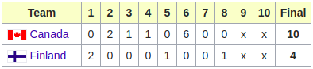
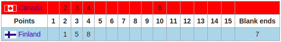

Scoring
Winnaar
De winnaar is het team met de meest verworpen punten op het einde van de ends. Punten worden verkregen op het einde van een end wanneer alle 8 stenen van elk team geworpen zijn.
Puntentelling
Het team met de steen die het dichste bij het midden van het huis light wint de end. Het winnende team krijgt een punt voor elke steen die dichter ligt dan de dichtsbijzijnde steen van de tegenstanders. Enkel de stenen die in het huis liggen tellen mee. Vaak is het niet duidelijke welke steen er het dichtste bij het huist ligt. Daarom wordt er vaak gespecialiseerde apparaten gebruikt.
Scoreboard
Er zijn twee soorten scoreboards waarop de punten worden bijgehouden.
Baseball-style scoreboard : is gemaakt voor het publiek via de televisie dat niet bekend is met het scorebord van de club. 
Club scoreboard : is het traditionele en meest gebruikte scorebord in curling clubs. Dit scorebord ziet er iets ingewikkelder uit en vraagt meer uitleg aan de hand van een voorbeeld. Stel dat het blauwe team 2 punten heeft gemaakt in de eerste end. Dan wordt er een 1 (van de 1e end) geplaatst in de kolom met de 2 (om de 2 punten aan te duiden). Als het blauwe team in de 5e end 1 punt scoort, wordt er een 5 geplaatst in de kolom met de 3 (2 + 1 = 3). Als laatste zijn er nog de "blank ends". Dit zijn ends waarbij niemand een punt heeft gescoord. 